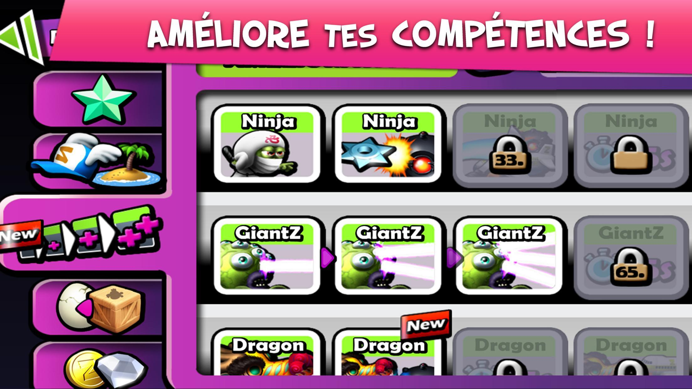

Les zombies se révoltent ! Dans Zombie Tsunami , prenez place dans une foule de morts-vivants déchaînés , faites la course à travers la ville, attaquez les malheureux survivants et ajouter les à votre horde de coureurs affamés.
Zombie Tsunami est là et tout le monde est invité!
Les commandes sont très faciles a prendre en main puisqu'il n'y a que la possibilité de sauter pour esquiver les obstacles.
Quand la partie commence, le joueur possède un Zombie qui se déplace tout seul vers la droite. Quand il croise un civil, le Zombie le mange, agrandissant la collection du joueur.
En effet, les civils éliminés deviennent a leurs tour des Zombies, ce qui donne des "vies" au joueur, car la partie s'arrête quand tous les Zombies du joueur sont morts.
Les zombies peuvent mourir de différentes façons: en tombant dans le vide, en se prenant des voitures, bus, tank ou avion dans la figure, ou en marchant sur des bombes.
Le joueur doit aussi ramasser des pièces qui lui permettront d'agrandir ses capacités dans la boutique.
Dans Zombie Tsunami, le joueur a accès a une panoplie de bonus offrant des avantages conséquent pour agrandir la horde. Du dragon au ninja, en passant par le zombie géant ou les quaterbacks, les bonus sont très divers et donne une profondeur au gameplay.Les bonus prennent fin au bout d'une vingtaine de seconde. L'exemple illustré ici est le quaterback. Quand le joueur ramasse ce bonus, tous les Zombie du joueur se transforment en quaterbacks, les rendants invincibles. Ils ne peuvent donc plus mourir des bombes ou des vehicules, mais craignent tout de même encore de tomber dans le vide. D'autres bonus peuvent palier ce problème, comme le bonus ballons qui transforme les Zombies en ballons, ou le dragon qui permet de planer. Les Zombies ne peuvent donc plus tomber, mais craignent les bombes et les véhicules. Il y a aussi le Giant Zombie qui permet de lancer des lasers, ou le Tsunami, qui rase tout sur son passage.
A la fin de chaque partie, le joueur gagne des pièces qu'il pourra depenser ultérieurement pour améliorer diverse choses comme le nombre de zombie de départ ou les bonus, mais il peut aussi acheter des skins pour personnaliser ses zombies. Prenons l'exemple des amélioration du bonus Ninja, qui permet aux Zombies de faire des doubles saut. La première amélioration permet aux Ninjas de lancer des shurikesn, faisant exploser les bombes, pour sauver les Zombies. La deuxième amélioration, coûtant plus de pièces, permet aux Ninjas d'avoir des katanas permettant de détruire les véhicules. La troisième et dernière amélioration permet d'augmenter la durée du bonus Ninja des 5 secondes. Il est donc important de jouer un nombre important de parties pour gagner des pièces permettant de devenir presque invincible, et donc d'améliorer son record de Zombies.